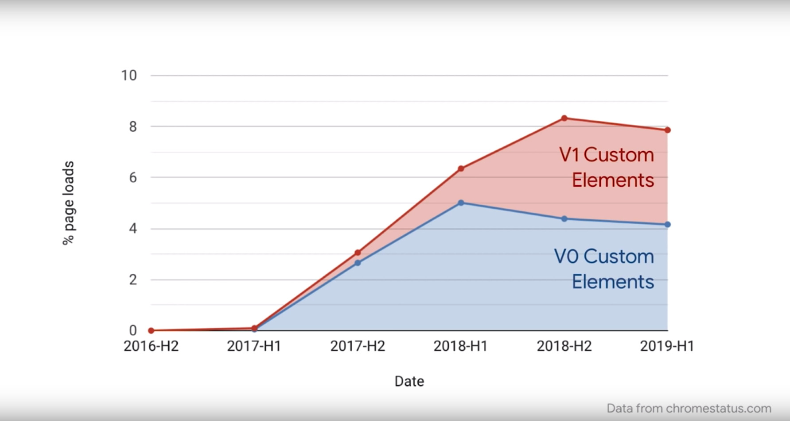
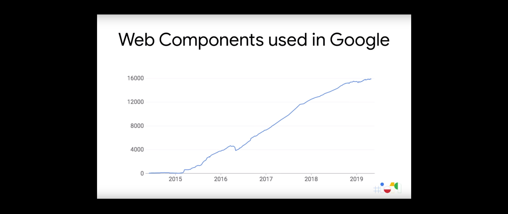

Web Components
The Secret Ingredient Helping Power The Web

Outline
- Current state of web components
- What's driving adoption(pros-cons compare)
- How to get started
At the first glance
class AppDrawer extends HTMLElement { // A getter/setter for an open property. get open() { return this.hasAttribute('open'); } set open(val) { // Reflect the value of the open property as an HTML attribute. if (val) { this.setAttribute('open', ''); } else { this.removeAttribute('open'); } this.toggleDrawer(); } // A getter/setter for a disabled property. get disabled() { return this.hasAttribute('disabled'); } set disabled(val) { // Reflect the value of the disabled property as an HTML attribute. if (val) { this.setAttribute('disabled', ''); } else { this.removeAttribute('disabled'); } } // Can define constructor arguments if you wish. constructor() { // If you define a constructor, always call super() first! // This is specific to CE and required by the spec. super(); // Setup a click listener on <app-drawer> itself. this.addEventListener('click', e => { // Don't toggle the drawer if it's disabled. if (this.disabled) { return; } this.toggleDrawer(); }); } toggleDrawer() { ... } } customElements.define('app-drawer', AppDrawer);
How to use
<app-drawer> <h1>This is Children</h1> </app-drawer> // children can read by JS this.children
Lifecycle
- constructor // addEventListener, create shadowDOM
- connectedCallback // ajax call
- disconnectedCallback // cleanup listener
- attributeChangedCallback(attrName, oldVal, newVal) // watch attr in static observedAttributes
- adoptedCallback
CSS/Shadow DOM
<template id="x-foo-from-template"> <style> p { color: green; } </style> <p>I'm in Shadow DOM. My markup was stamped from a <template>.</p> </template> <script> let tmpl = document.querySelector('#x-foo-from-template'); customElements.define('x-foo-from-template', class extends HTMLElement { constructor() { super(); // always call super() first in the constructor. let shadowRoot = this.attachShadow({mode: 'open'}); shadowRoot.appendChild(tmpl.content.cloneNode(true)); } ... }); </script>
Current state of web components
who are using web components?
Everyone
- Youtube
- Github
- Google News(All AMP websites)
- salesforce
Custom Elements
Web Components in Google
What's driving adoption
Framework VS Standard 2014

Framework VS Standard 2019

Framework VS Standard
- Performance(implatement in framework by JS vs implatement by native browser)
- Tooling ecosystem(framework based devtool vs browser devtool)
- No Breaking changes
- Being stuck with old technology(evolution)
- Being stuck inside a walled garden(protability)
- Interoperability(Across framework)